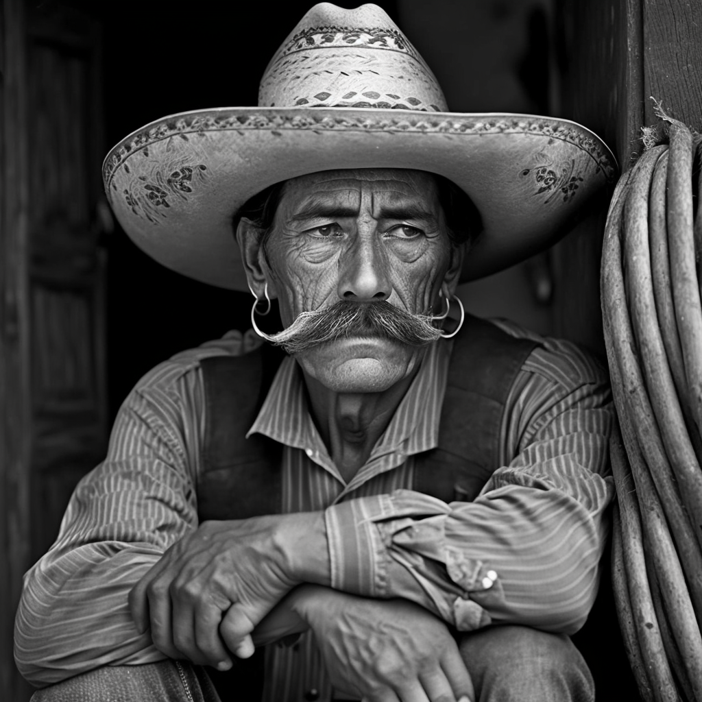

¿Quién fue Porfirio Díaz?
Porfirio Díaz fue un político y militar que destacó en diversos hechos de armas y procesos políticos de relevancia para la historia nacional. Su carrera como militar comenzó en 1854, cuando se adhirió al Plan de Ayutla, mediante el cual se desconoció al gobierno del General Antonio López de Santa Anna. El 2 de julio de 1915, murió en la Ciudad de París, Francia en donde actualmente descansan sus restos.
Estuvo en el poder por más de 30 años ( 1876-1880 y 1884-1911.)
Aportes a México en el Porfiriato
· Promulgó una ley para crear la Universidad Nacional de México (UNAM), en 1900.
· Mejoró la economía nacional gracias al incremento en las exportaciones de materias primas.
· Construyó una gran cantidad de vías ferroviarias, que pasaron de 800 kilómetros a 20 mil, facilitando así la inversión extranjera.
· La red de vías telegráficas aumentó de 7,136 a 23,654 kilómetros, así como apostó por mejorar el servicio de correos.
· Trasladó la campana de Dolores al Zócalo capitalino y fue el primer presidente en dar "El Grito" que se convertiría en tradición.
· Realizó la primera transmisión telefónica experimental en México.
· Comenzó la construcción del Palacio de Bellas Artes y del Ángel de la Independencia.
Desventajas del Porfiriato

· Negocios para unos pocos. Durante el Porfiriato solo podían hacer negocios los extranjeros. La industrialización del país estaba en manos de unos pocos.
· Falta de libertades políticas. Porfirio Díaz se mantuvo tantos años en el poder gracias al fraude electoral, la represión y la corrupción.
· Polarización social. Durante este periodo se aumentaron las diferencias sociales. Frente a una minoría rica se encontraban 13 millones de mexicanos en la pobreza extrema.
· Esclavitud y Expropiación. Se estableció la expropiación de las tierras a las poblaciones indígenas. Lo que desembocó en matanzas, los supervivientes fueron esclavizados. El descontento social es un factor importante para entender el final del Porfiriato y el inicio de la Revolución Mexicana.
Bibliografía
Secretaría de la Defensa Nacional. (2019, junio 29). 2 de julio de 1915, aniversario luctuoso del General Porfirio Díaz. Gobierno de México. https://www.gob.mx/sedena/documentos/2-de-julio-de-1915-aniversario-luctuoso-del-general-porfirio-diaz
Angulo, G. (2020, noviembre 20). Las aportaciones de Porfirio Díaz a México, que quizá NO conocías. La Gaceta. https://lagaceta.me/noticias/detalle/las-aportaciones-de-porfirio-diaz-a-mexico-que-quiza-no-conocias/